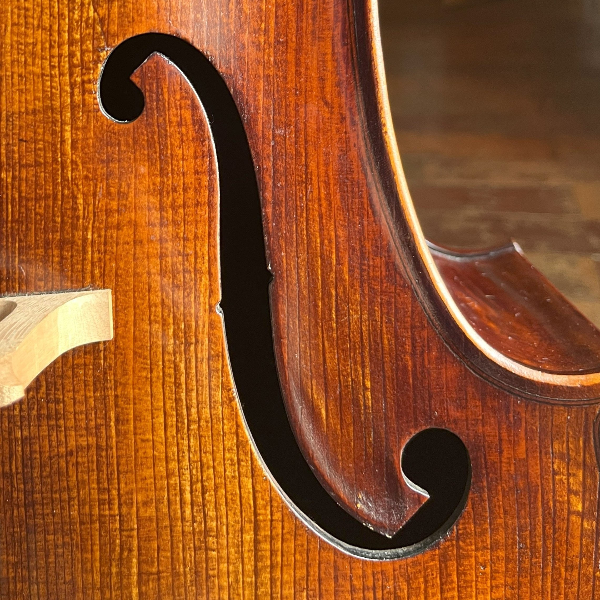

Olá,
usuário
!
Quiz
Gráficos
Mural de Avisos
Sair
INICIAR QUIZ
Quantidade de acertos:
Quantidade de erros:
Pontuação Final:
***
***
Questão atual:
de
questões.
Escolha uma opção dentre as abaixo:
Submeter resposta
Avançar para próxima questão
Tentar novamente